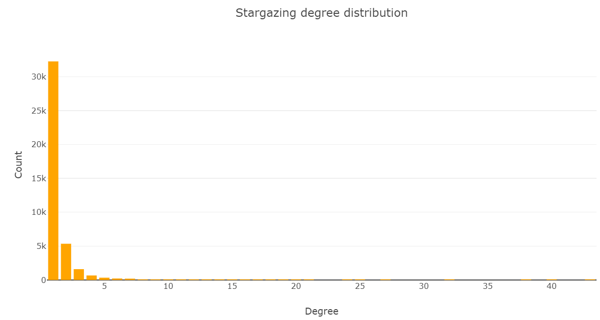
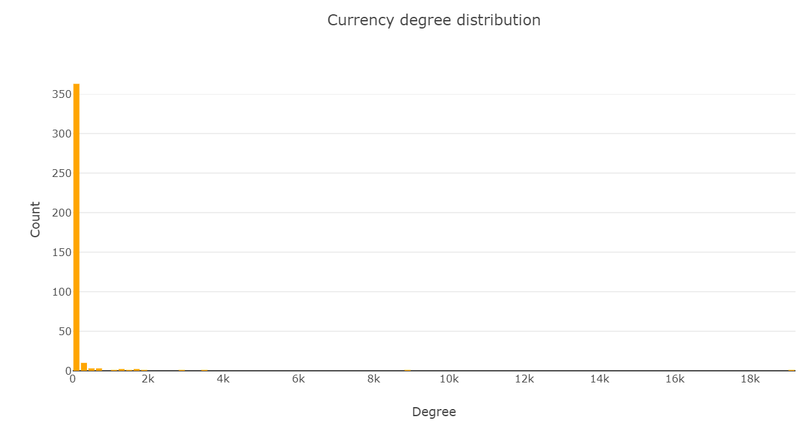

Analysis of GitHub communities in the development of crypto-currencies
by Johannes Ostner and Shasa Foster
December 2017
Table of Contents
1. Motivation
1.1 How and why we want to analyze the cryptocurrency developer community
Cryptocurrencies are maybe the most interesting economic phenomenon in recent years. Being able to basically generate money by running computer algorithms and doing very little work after an initial setup is a very tempting outlook for everybody. And even though the possible uses of bitcoin and co. to actually buy stuff from the real world are still limited, more and more people have jumped on the train of mining and trading with cryptocurrencies, resulting in huge value increases. In 2017 alone, the worth of bitcoin, the oldest, most common and most valuable cryptocurrency, has increased more than tenfold, eclipsing the 10,000$ mark on November 28th. This has lead to some interesting developments in recent time, such as prices for some computer hardware, especially powerful graphics cards, almost doubling in the last year.

But just as more and more people have begun to join the virtual gold rush and try their luck at mining bitcoins with their home equipment, other groups of programming enthusiasts and cryptology specialists have started to create alternatives to the almighty bitcoin, resulting in hundreds of more or less valuable virtual forms of money being available and ready to be mined. In order to do so, one has to get a piece of source code from the internet, which is most of the time stored on github.
Github itself, again, is not only a way to share and collaborate on programmin projects, but also has functions that make it a social platform, such as the ability to follow another user or to "like" a certain project or code reporitory. This second act is called "stargazing" in github terms. And that"s where data science and social graphs come into play. We want to find out, how the stargazer community of different cryptocurrencies is shaped. In order to do so, we need to get the necessary information about the code repositories via the github api and then analyze it with tools of network science.
We also want to take a look at the Wikipedia entries of some cryptocurrencies and try to find differences in word choice, etc. Because most of the digital currencies are very new or small, the number of Wikipedia entries is very limited.
TL;DR: We want to analyze the community of cryptocurrency enthusiasts on github and the corresponding Wikipedia pages. We want to do this, because it is a booming, highly discussed industry that could change the face of the financial world
1.2 Dataset description
The dataset that we collected and analyzed contains the github repositories for over 300 cryptocurrencies and their stargazers. Also, we have information on which of the users that starred one of the repositories follow each other. The second piece of data are the Wikipedia pages to some of the aforementioned currencies.
1.3 Goals for user experience
With the website, we want to provide insight to several questions about the cryptocurrency community:
- How is github relevance connected to a currency"s market value?
- What are the similarities between several cryptocurrencies" following bases?
- Are there communities within the group of users starring cryptocurrency repositories?
- What can we gain from analyzing the Wikipedia pages of certain currencies?
2. The data
2.1 Dataset collection and setup
2.1.1 Stargazer network data collection
To gain an insight on which cryptocurrencies exist and where to find their source code, we first need a place to gain this information from. On coinmarketcap.com, we can find all the cryptocurrencies" names. We used web scraping to extract the names of over 1300 crpyto-currencies.
As a next step, we need to find the actual github repositories for the currencies. The site coingecko.com allows us to get this information (Note that not all cryptocurrencies have github repositories, thus we will end up with a shorter list than before)
We where successful in finding the repositories of over the vast majority of significant crypto-currency projects. For example in the top 50 crypto-currencies by marketcap only 4 do not have an active git repository.
These are:
- Stellar-Lumens (no. 17 by market cap)
- Byteball-btyes (no. 31 by market cap)
- Metaverse-etp (no. 38 by market cap)
- Vechain (no. 47 by market cap)
Now we are finally ready to get the data we will be working with. By using the github API (a way to get data from GitHub) and the python package PyGithub we can get all the needed information about the cryptocurrencies" repositories.
2.1.2 Stargazer network setup
With the data we gained, we can now set up a network with the following properties:
- Nodes can either be users or currencies. This is specified by a node attribute "Type"
- Edges are either of the type gazes (User-to-currency) or follows (user-to-user)
2.1.3 Add links between users
Now that we know which users starred the cryptocurrencies, we can add connections between these, depending on which users follow a certain person on github. These connections will be represented in the graph as additional edges.
An edge points from one github user to another if the user follows the other user on github.
Hence,- edges representing a users "following" are pointing to the user. (from other users to the user)
- edges representing a users "follows" are poining away from the user (from the user to their followers)
By getting the users that a given user is following for every user in the network and intersecting this with the users already in the network (as as most of the users a user is following do not have starred any of the github communities) we will be able to create
2.1.4 Wikipedia entry collection
The second set of data we are going to analyze are Wikipedia pages of cryptocurrencies. We can find a list of Wikipedia"s pages about these here. After downloading it, we can find all the links to pages covering specific currencies.
We access each link to each specific crypto-currency, and then download the wikipedia page for the crypto-currency.
2.2 Summary statistics and basic properties of the network
The stargazer part
After collecting all our data, we can start looking into it. First, we need an overview of how big our stargazer network is
- The network has 390 crypto-currencies (representing 99.5%+ of the marketcap)
- The network has 40821 GitHub users
- The network has 57462 total "stars" (a "star" means user has starred a GitHub repository
We will now look at how many crypto-currency repositories a GitHub users has starred. The chart below shows a histgram of how many repositores (the degree on x-axis corresponds to number of repositories starred by a user) have been starred by the users.
Most users follow only one currency, but some follow more than one, resulting in a power-law distribution. Users are on average subscribed to 1.4 currencies. The maximum number of currencies stargazed is 43 ("followtheart").
We now look at how many stars a crypto-currency GitHub repository has.
For currencies, we have an even steeper power-law distribution of degrees. Most currencies have only very few stargazers, while only a few eclipse the 1000 stargazers mark. Unsurprisingly, bitcoin takes the cake with nearly 20000 stargazers, followed by the second most popular currency, ethereum. On average, a currency has about 147 stargazers. This is influenced heavily by the big currencies though (The median is at only 6 subscribers).
2.2.2 The follower part
We also need to take a look at the users following each other.
Some basic statistics for in-degrees (the number of followers a user has) are:
- Average number of followers of user
- Median number of followers of user
Top followed users:
- kennethreitz: 752 followings
- clowwindy: 450 followings
- igrigorik: 356 followings
- BYVoid: 323 followings
- laanwj: 321 followings

Like the stargazing degrees, this statistic follows a power law. The average user has 1 person follwing him (The mean is very skewed by the top users). The most followed user is actually Kenneth Reitz, the leading Python developer. This points out the relevance that Python has in the cryptocurrency community. We will do the same thing for the out-degrees (number of users a given user is following) too:

The distribution of this statistic is extreme. More than half of the users don"t even follow a single other user in the community (median=0), while there are a few users that follow a lot of others. At least the top 2 users havd most likely used the github API to follow users automatically. After this first analysis, we can dig deeper into certain aspects of the cryptocurrency github commumnity:
3. The analysis
3.1 Follower Similiarity
3.1.1 Goals
We want to take a closer look at the follower communities of the individual currencies and find out how similar they are to each other, e.g. see for a pair of cryptocurrencies, how many people have stargazed both of them. Then we can look at how these similarities behave and see whether there are some patterns or not.
Highest similarities:- ("steem", "steem-dollars"): Similarity 1.0
- ("nav-coin", "bitdeal"): Similarity 1.0
- ("e-dinar-coin", "edrcoin"): Similarity 1.0
- ("breakout-stake", "breakout"): Similarity 1.0
- ("ultracoin", "incakoin"): Similarity 1.0
Lowest similarities:
- ("bitcoin", "nolimitcoin"): Similarity 0.0
- ("bitcoin", "leocoin"): Similarity 0.0
- ("bitcoin", "einsteinium"): Similarity 0.0
- ("bitcoin", "toacoin"): Similarity 0.0
- ("bitcoin", "salus"): Similarity 0.0
3.1.4 Step 3: Analysis of one similarity entries
Lets look closer at the crypto-currencies with a similiarity of one. A similiarity of one means the crypto-currencies have been starred by exactly the same users.
- steem: 648 - steem-dollars: 648
- nav-coin: 26 - bitdeal: 26
- e-dinar-coin: 5 - edrcoin: 5
- breakout-stake: 5 - breakout: 5
- ultracoin: 1 - incakoin: 1
- zurcoin: 1 - argentum: 1
- cypher: 1 - spacecoin: 1
- 1337: 4 - falcoin: 4
- britcoin: 1 - ratecoin: 1
- virtacoinplus: 73 - virtacoin: 73
We may disregard repositories with only one stargazer. These have no informative value. The others are pretty self-explanatory: Currencies with similar names (e.g. steem, steem-dollars) simply share the same github repository thus have the same stargazers.
3.1.5 Analysis of zero similarity entries
A similiarity of zero means the crypto-currencies have no common users who have starred them. Crypto-currency pairs in which one of the crypto-currencies had zero stars were removed as the result is meaningless. Below is a list of crypto-currency pairs with a similiarity of zero
- lbry-credits, virtacoinplus
- lbry-credits, virtacoin
- ripple, okcash
- bitcoin, signatum
- bitcoin, trustplus
- ethereum, synergy
- bitcoin, earthcoin
- lisk, gambit
- bitcoin, heat
- litecoin, virtacoinplus
- litecoin, virtacoin
- achain, lbry-credits
- bitcoin, pandacoin
- siacoin, virtacoinplus
- siacoin, virtacoin
- zcash, paycoin
- ripple, virtacoinplus
- ripple, virtacoin
- ethereum, signatum
- bitcoin, evergreencoin
3.1.6 Step 5: Analysis of other similarity entries
After covering the borders of the spectrum of similarities, we now get to the core. Let's analyze the currencies that have not entirely similar or dissimilar communities.
The average similiarity was found to be 0.01556.
Maximal similarities:
- ('masternodecoin', 'innova'): Similarity 0.5
- ('audiocoin', 'dfscoin'): Similarity 0.5
- ('ultracoin', 'steps'): Similarity 0.5
- ('triangles', 'britcoin'): Similarity 0.5
- ('triangles', 'ratecoin'): Similarity 0.5
- ('incakoin', 'steps'): Similarity 0.5
- ('innova', 'desire'): Similarity 0.4
- ('dynamic', 'sequence'): Similarity 0.375
- ('masternodecoin', 'force'): Similarity 0.33
- ('machinecoin', 'fujicoin'): Similarity 0.33
Minimal similarities:
- ('bitcoin', 'blitzcash'): Similarity 5.205e-05
- ('bitcoin', 'magi'): Similarity 5.206e-05
- ('bitcoin', 'dynamic'): Similarity 5.207e-05
- ('bitcoin', 'memetic'): Similarity 5.207e-05
- ('bitcoin', 'arcticcoin'): Similarity 5.208e-05
- ('bitcoin', 'ethereum-dark'): Similarity 5.208e-05
- ('bitcoin', 'eternity'): Similarity 5.208e-05
- ('bitcoin', 'cloakcoin'): Similarity 5.208e-05
- ('bitcoin', 'fantomcoin'): Similarity 5.208e-05
- ('bitcoin', 'ion'): Similarity 5.209e-05
For maximal values, we only get very small currencies, whose share one of two or three total users. For minimal values, bitcoin with its huge userbase has a spot in in all top entries (what was to be expected).
 The values are exponentially distributed, which is no surprise. Also, the overall values are very low. We now want to see if there is a dependency between follower community size and community similarity. Therefore, we plot a pair's combined community size against their similarity:
The values are exponentially distributed, which is no surprise. Also, the overall values are very low. We now want to see if there is a dependency between follower community size and community similarity. Therefore, we plot a pair's combined community size against their similarity:

Most values bunch up in the bottom, the small currencies' outliers in similarity are clearly visible at the left edge. Also, the points generated by the two biggest currencies bitcoin and ethereum are clearly visible as bunches towards the right. Astonishingly, there seems to be a positive correlation between the second currency's follower base and the similarity.
We thus want to investigate the currencies with big following bases nearer:
3.1.7 Step 6: The big fishes
We seem to oberve a correlation between 2nd currency follower counts and similarity for each currency. After further investigation, this observation of positive correlation between followers and similarity only holds for the big currencies. It even completely flips for currencies outside of the top 10. We can visualize it with a chart.

So for the biggest currencies we can say that follower similarity increases with the size of the second currency, for the less big currencies it is the other way around.
3.1.8 Summary
This analysis step provides some insight on how similar currency follower groups are. Setting the similarity measuremant to the Jaccard coefficient, we get the following results:
- Some currencies actually share a github repository. They are also normally named similarly.
- Zero similarity is often caused by a currency having no stargazers.
- The currencies virtacoin and virtacoinplus seem to have a follower base that is very distinct from the others
- Not even 10% of all currency pairs share at least one user
- For the biggest 20 cryptocurrencies, some interesting trends can be observed:
- For the biggest currencies, user similarity is higher with other very big currencies than with smaller ones
- For a little bit smaller curerncies, it is the other way.
3.2 Analyzing followers vs. marketcap
3.2.1 Goals
Now we want to add the most important attribute of a cryptocurrency into the mix - its marketcap. We want to discover whether statistics about the github repository of a currency can tell something about its economic value.
We downloaded marketcap values for the cryptocurrencies from coinmarketcap.com. Now, we cann add these as node attributes to our graph.

The correlation between follower count and marcetcap as found to be 0.94. This looks very good at first glance but plotting the data reveals that bitcoin and ethereum have such a big marketcap and follower basis that it renders the other currencies irrelevant. Hence, we will replot but the bitcoin and ethereum datapoints will be dropped.

When looking at the same plot without the two currencies, we get a totally different picture and a much worse correlation. The correlation between follower count and marketcap without bitcoin or ethereum is 0.27.
We can clearly see that there is no strong dependency between the two variables. Thus, we will try to find other variables that influence the marketcap
3.2.4 Step 3: New variables
We now want to find other variables that could have an impact on marketcap. First, we look at the time a currency's repository was created. We then calculate its age in days (until 3rd December 2017) and compare it to the monetary value. Because bitcoin and ethereum were some of the first currencies and are the biggest, we suspect a correlation. Wefound the correlation between age and marketcap to be 0.17
There is no good correlation, because many of the old currencies never made it big despite their age. We will therefore put this on ice.
Another idea would be the number of forks. If you want to experiment with code and maybe use it for your purposes, you need to create a fork. The idea is that cryptocurrencies with a high marketcap will have a high number of forks.
The correlation between the number of forks of a crypto-currency and marketcap was found to be 0.96

Again, bitcoin and ethereum falsify the result, so we take a closer look at the others. After removing Bitcoin and Ethereum from the data the correlation between forks and marketcap is 0.23

This metric is very similar to the follower count. The points are nearly at the same spots as in the corresponding follower plot. The correlation between these two attributes confirms this with correlation between forks and stargazers at 0.51
3.2.5 Step 4: Multiple regression model
Now we try our luck at putting a combination of these variables into one model to predict the marketcap. We will therefore leave out bitcoin and ethereum, as they are clear outliers and would heavily skew the result. We will try several combinations of the three attributes and compare their error. The model with the loest error will be the best one.
The model with all three attributes (age, stargazers, forcks) has the lowest error. However the error istoo high to predict the marketcap of a cryptocurrency reliably. The marketcap of a cryptocurrency has probably different reasons than the information we can get from github. Take for example the currency "bitcoin-cash": It is a so-called hard fork of bitcoin that was introduced in July 2017. Thus, it has the third-highest marketcap of all the currencies in our dataset despite being very young and not having many stargazers on github.
3.2.6 Summary
In this step, we tried to find a connection between github repository characteristics and the marketcap of cryptocurrencies. These are the results:
- There is a correlation between marketcap and number of stargazers, but it is not very high when eliminating outliers
- Bitcoin and ethereum are way bigger in every metric than the other currencies and influence results heavily
- The age of a cryptocurrency (or its github repository) has very little influence on its marketcap
- Even when combining stargazers, forks and age into one model, we get quite bad results. This is in part due to hard forks like bitcoin-cash
- There is further action required to fit a model that actually predicts the marketcap reliably.
3.3 Analysing communities
As a recap, earlier we created a network of all the "following" relationships between the GitHub user. An algorithm was used to partition this network into communities, while minising the error. The optimal value of communties was found to be 100. However most of the communities were small with 76 communities containing only two or three users.
Further analysis was carried on the 16 communites with over 100 members.